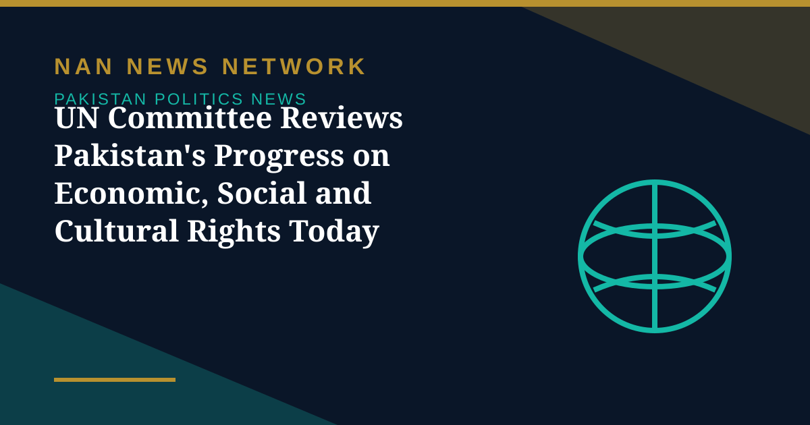

UN Committee Reviews Pakistan's Progress on Economic, Social and Cultural Rights Today

A United Nations committee will review Pakistan's efforts to implement the International Covenant on Economic, Social and Cultural Rights (ICESCR) during its eighth session in Geneva on Wednesday, Dawn reported on November 4.
Who is involved
The Committee on Economic, Social and Cultural Rights is a body of 18 independent experts that monitors implementation of the ICESCR by its state parties. Barrister Aqeel Malik, the Minister of State for Law and Justice, will lead Pakistan's 11-member delegation to the session, which reviews the country's second periodic report under the covenant. The delegation includes Tahir Andrabi, Pakistan's Ambassador and Permanent Representative, the secretary to the Ministry of Human Rights, and Nayyab Ali, a consultant on transgender rights.
Why this session matters
The session takes place at a significant moment — the 60th anniversaries of the ICESCR and the International Covenant on Civil and Political Rights. The committee seeks a constructive dialogue with state parties, to determine whether the covenant's norms are being applied and how implementation and enforcement could be improved so people can enjoy these rights in full. Amnesty International is due to submit a briefing paper to coincide with Pakistan's second periodic review, Dawn reported. The committee's conclusions had not been published at the time of writing.
Sources: Dawn, November 4, 2026
More on Pakistan Politics News
- Pakistan Tests Indigenous Fa'az Air-to-Air Missile, Its First Locally Developed Weapon of Its Kind
- Government Offers PTI Five Seats on Electoral Reforms Committee — and PTI Asks for the 2013 Formula
- ECP Issues Show-Cause Notice to MQM-P Over Missed Intra-Party Poll Deadline
- MQM-P Launches Street Movement for New Administrative Units, Announces November 29 Rally
- Pakistan Welcomes US Mediation Offer on Taliban Talks — With Conditions
- PTI Hits Back at Shehbaz Sharif Over KP Criticism, Demands End to Governor's Rule
- China's CPC Minister Liu Haixing Arrives in Islamabad on First Official Visit
- PPP Courts Opposition to Join 30-Member Electoral Reforms Committee
- National Assembly Unanimously Passes Workplace Harassment Resolution as Parliament Is Prorogued
- National Assembly Passes Four Government Amendment Bills by Majority Vote
- Opposition Signals Willingness to Join Electoral Reforms Committee After PPP Outreach
- National Assembly Session Suspended After Speaker Finds House Lacks Quorum
- Pakistan Proposes Parliamentary Friendship Group With Turkmenistan
- Lahore High Court Judge Mohsin Akhtar Kayani Resigns, Citing Executive Grip on Judiciary
- Pakistan Says Afghan Firing Kills One in South Waziristan Border District
- Pakistan Marks Kashmir Black Day With Rallies Across the Country
- National Assembly Passes Seven Private Members' Bills, Sends Six to Committees
- Pakistan Strongly Condemns Houthi Missile Attacks Near Makkah and Madinah
- Pakistan, Saudi Arabia and Turkiye Reported to Hold Tehran Talks on De-escalation
- Pakistan LPG Shortage Worsens as Iran Border Crossings Close
- Pakistan Ends Machine-Readable Passports and Switches Fully to E-Passports
- Pakistan Calls for a Fairer Global Order at the United Nations